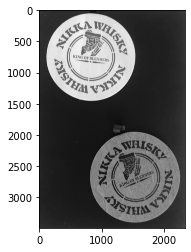

findContoursで輪郭の検出
本記事はQrunchからの転載です。
画像から物体の輪郭を見つけたくなることが多々あります。 そんなときにもOpenCVを利用することができます。
findContoursで輪郭抽出#
次の画像から輪郭の抽出をおこなうことを考えます。

最初に次のように二値化しておきます。
_, bi_img = cv2.threshold(img, 0, 255, cv2.THRESH_BINARY + cv2.THRESH_OTSU)

これに対して次のようにfindContoursを適用します。
contours, hierarcies = cv2.findContours(bi_img,
cv2.RETR_EXTERNAL,
cv2.CHAIN_APPROX_NONE)
- 第二引数は輪郭の取り出し方を指定しており、cv2.RETR_EXTERNALは一番外側の輪郭だけを取り出します。ここに指定できる方法の比較は後でおこないます。
- 第三引数は輪郭の近似方法をあらわします。例えば、cv2.CHAIN_APPROX_SIMPLEにすると、返ってくる点の数が大きく減ります。cv2.CHAIN_APPROX_TC89_L1にすると返ってくる点の数をうまい具合に減らしてくれますが、他に比べると計算量がかかります。
- 返り値の1つめが輪郭を格納したリストです。２つめが輪郭の階層構造をあらわしています。
- 細かく言うと、輪郭の方は、点のリストが1つの輪郭をあらわし、それらのリストが格納されています。
- 階層構造の方は、輪郭ごとに１つの階層構造をあらわす4つの要素をもつリストが存在します。各要素の0番目は次の輪郭のインデックス、1番目は前の輪郭のインデックス、2番目は子の輪郭のなかで1番目のインデックス、3番目は親の輪郭のインデックスをあらわします。親と子が何かといえば、親はみている輪郭を囲んでいる輪郭のことで、子は中にある輪郭のことです。
見つかった輪郭を次のように描画してみます。
drawed = cv2.drawContours(np.stack([img, img, img], axis=-1),
contours,
-1,
(255, 0, 0),
10)
plt.imshow(drawed)
plt.show()
描画の結果は以下のとおりです。

輪郭の取り出し方を変えてみる#
先程は輪郭の取り出し方にcv2.RETR_EXTERNALを指定しました。これは一番外側の輪郭しか取れません。 次にちゃんと階層構造をもった結果を返すようにしてみます。これにはcv2.RETR_TREEを指定します。
contours, hierarcies = cv2.findContours(bi_img,
cv2.RETR_TREE,
cv2.CHAIN_APPROX_NONE)

他にもcv2.RETR_LISTやcv2.RETR_CCOMPなどがありますが、hierarciesの中の階層構造の情報の持ち方が変わってきます。